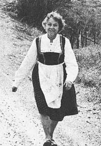
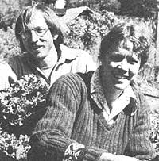
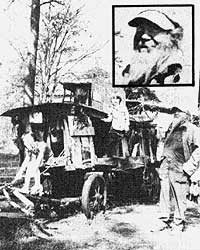

In celebration of little-known MOTHER-type folks from all over.
Jane Farwell has become something of a cult figure. Her easy smile, genuine warmth, and far-reaching knowledge of rural communities have almost made her a part of the folklore she's so doggedly devoted her life to preserving . . . at Folklore Village Farm (near Dodgeville) in the hilly folds of southwestern Wisconsin.
Ms. Farwell was raised in the area, which has been heavily influenced by German, Swedish, Cornish, Dutch, and other highly ethnic groups. Quite naturally, Jane grew not only to appreciate the folkways of these diverse nationalities, but also to realize that their old-time practices were dying out. That interest spurred her to graduate from Antioch College with a self-styled major in Rural Community Leadership, and-afterwards-to travel throughout the world studying traditional dances, arts, and village lifestyles.
Upon her return to the U.S., Jane immediately began opening folk-dance and folkways clinics all over the country. Eventually, however, she went back to her native state and with the aid of grants, donations, and fees from participants founded Folklore Village Farm.
Today this determined lady's "university" (housed in a one-room schoolhouse, two quaint bunkhouses, and the Farwell family farm) teaches art, music, dance, cuisine, and folklore from all over the world . . . sponsors weekly community pot luck suppers . . . and holds varied folk festivals (Greek Easter, a Hebrew Purim, or an old English May celebration complete with pagan rites and wild foods foraging, to name a few). Guests from all parts of the country are instantly absorbed into village life: They pitch in with dishwashing, decorating the schoolhouse, hauling water, or any of the other right-at-home chores which need to be done.
"We're losing touch with our roots," Jane says. "We're losing touch with who we are." Her life, as a result, has been dedicated to reversing that trend . . . to preserving a link between us and our beginnings. And Folklore Village Farm-from its homegrown food through its warm community atmosphere-is, indeed, a charming way to accomplish that goal.-
Even in this age of glistening ecological enlightenment, it's rare to meet back-to-nature folk who are able to create a good life for a dozen or so people on just four acres. Beth and Jim Nelson, however, are that kind of exceptional couple. Their recently incorporated, diversified farm community known as Camp Joy not only supports Beth and Jim and their two children . . . but also feeds nine other individuals (six adults and three youngsters), with enough produce leftover to trade with the neighbors or sell at a nearby co-op.
Beth and Jim met back in 1968 at the French Intensive gardens which Alan Chadwick developed at the University of California (Santa Cruz campus). Like so many other young people in the 60's, the Nelsons were searching for something to believe in and-to them-Chadwick's methods were "the most exciting thing around at the time". Together they carried those unconventional ideas along when they moved on to British Columbia . . . where, naturally, they added to their store of farming know-how with additional tips gleaned from their Dukhobor neighbors.
In the meantime (while the couple was learning various gardening techniques, that is), a landowner near Santa Cruz was also looking closely at Chadwick's accomplishments. He was so impressed, in fact, that he decided to offer the use of four of his acres for the development of an experimental farm . . . at just the time when the Nelsons-who were homesick after a two-year absence-returned to the area.
It was a fortunate coincidence, and Beth and Jim snapped up the opportunity to put their knowledge to work. Five or six friends-all former Chadwick students-joined them in the venture and helped create rustic living quarters in an old barn . . . fabricate outbuildings from recycled materials . . . and plan orchards, gardens, a community house, and chicken yards. The community's double-dug raised beds soon began yielding bountifully.
Camp Joy is now basically self-supporting (though a $10,000 grant from a local foundation did pay for a new well and a solar water heater). Three-fourths of the residents' food supply consists of homegrown fruit, vegetables, chickens, eggs, and goat's milk. And the community grosses between $4,000 and $6,000 a year . . . most of which is used for seed, simple clothing, medical expenses, and the few grains, nuts, and citrus fruits needed to supplement their diets.
Along with Bob Grunnet (one of their oldest associates), Beth and Jim are "spreading the word" about their methods both by teaching gardening classes in the local adult education program and by sharing their skills with four or five seasonal apprentices. But their best lessons come from example: undisputed evidence that their system of crop rotation, mulching, and composting pay off in richer soil.
Although Beth and Jim own no acreage themselves, they're still very rich people. Their capital is the faith they have in themselves, the land, and the community . . . and their profit, the delphiniums which tower overhead because of the rich compost they return to the earth.- Margaret Reynolds.
"Conservation" is nothing new to Chester McCartney. Over a lifetime he's used about as little energy and natural resources as any individual alive, yet he's crossed the country 15 times and become an almost-legendary figure for many rural youngsters . . . as the American Goat Man.
From around 1930 to 1968, this bearded vagabond from Jeffersonville, Georgia traveled on foot all over the U.S. (more than 100,000 miles) with his two cluttered wagons pulled along by a team of goats. It was a real treat for country children-especially back in the 30's and 40's when radios, TVs, movies, etc., were scarce-to learn of his coming. Their pre-arrival excitement would climax (in some places, at least) when school was let out for the day and all could run out en masse to greet this mysterious man. Sometimes Chester would stay in town for a week, entertaining the young' uns with stories of his many adventures and funny tales about his animals . . . then one morning he would disappear to parts unknown.
Throughout his journeys, McCartney managed to "save" in his use of any thing, even though the practice wasn't yet fashionable. He never owned an automobile . . . he cooked his meals in woods and on highways using whatever fuels were available . . . he slept near his goats in the winter to take advantage of their natural animal heat . . . he bathed in rivers and creeks . . . and his prepackaged entertainment came not from TV, but from the mountains and valleys of America.
Even today while living in his retirement shack, the 90-year-old Goat Man provides a working example of the "do-more-with-less" philosophy. He lights his but with candles, cooks on a homemade stove created from an oil drum cut in half (and fueled with newspapers and other trash he collects from surrounding cities), and even gathers reading material, clothing, pots and pans, usable dishes, and occasionally a snappy pair of shoes from other folks' "garbage" cans.
Chester McCartney has truly had an "experiment with life". It's one we can all learn from.- Hugh Pratt.
Know someone-sung or unsung-who's doing something of merit in wholistic gardening, alternative energy, conservation, self-employment, low-cost house construction, or any other field of endeavor featured in MOTHER? A fact-filled, 450- to 500-word essay describing that person and a sharp, glossy, black-and-white photo can-upon acceptance for use in PROFILES-earn you a fast, flat $50. Send your contribution to: PROFILES Editor, THE Mother Earth News (restricted) , P.O. Box 70, Hendersonville, N.C. 28739.
|
 PHOTO BY BILL HANLEY |
 PHOTO BY MARGARET REYNOLDS |
 PHOTOS BY TIM O. MOORE |